Realm & Empire: Oaren
WORK IN PROGRESS: I am still in the task of porting everything over from my Obsidian projects and it takes time.

WORK IN PROGRESS: I am still in the task of porting everything over from my Obsidian projects and it takes time.
The Realm & Empire: Oaren takes place in the far edge of the Southern Bylazstibian Empire. The Old Kingdom dynasty of Abolgia has fallen after a massacre of the royal family and its lineage, wiped out in a night. Over a decade later four petty Kingdoms have emerged from the conflict, each with their own design for the realm of Oaren.
With a decade of war ravaging and depleting the realm of people and power, the Bylazstibian Empire imposed an era of enforced peace.
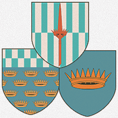
The Dynastic rulers of the Old Kingdom. With the discovery of a surviving bastard heir to the throne, monarchists rally under his banner to seat him back as ruler of all Oaren.
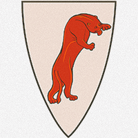
House Enetani traces its lineage to a time before the Old Kingdoms and before the Empire, they now take to the chaos in the realm to carve out the lands owed to their lineage.
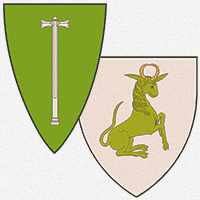
What started as a rebellion against a single provincial lord, the people of Oaren outsted all their nobility, hailing one of their number as a liberator, the Teperosi came into being.
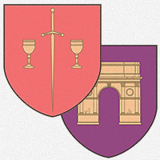
Merchant trademasters from Rheane, a realm across the sea. The Ylmara have purchased their way into the very soul of Oaren and now tighten their grip on coffers across the realm.
The Dynastic rulers of the Old Kingdom. With the discovery of a surviving bastard heir to the throne, monarchists rally under his banner to seat him back as ruler of all Oaren.
The Abolgian Dynasty ruled Oaren for over a century of peace after expelling the Ualmordian Dominion from the realm. This hundred year period saw the realm flourish, and relations with the Bylazstibian Empire were at their highest. Under Imperial tutelage the Abolgians brought in a Golden Age, a Renaissance, that saw the peoples of Oaren adopt Imperial customs and learning. With the death of King Charles the Third and the massacre of the royal family the realm was thrown off this Golden Path and into chaos. Shortly after the bloodshed, the Loyalists and Monarchists of Oaren discovered a bastard heir, the Little Prince Carlos of Abolgia, they styled him Charles the Fourth, and march upon Oaren.
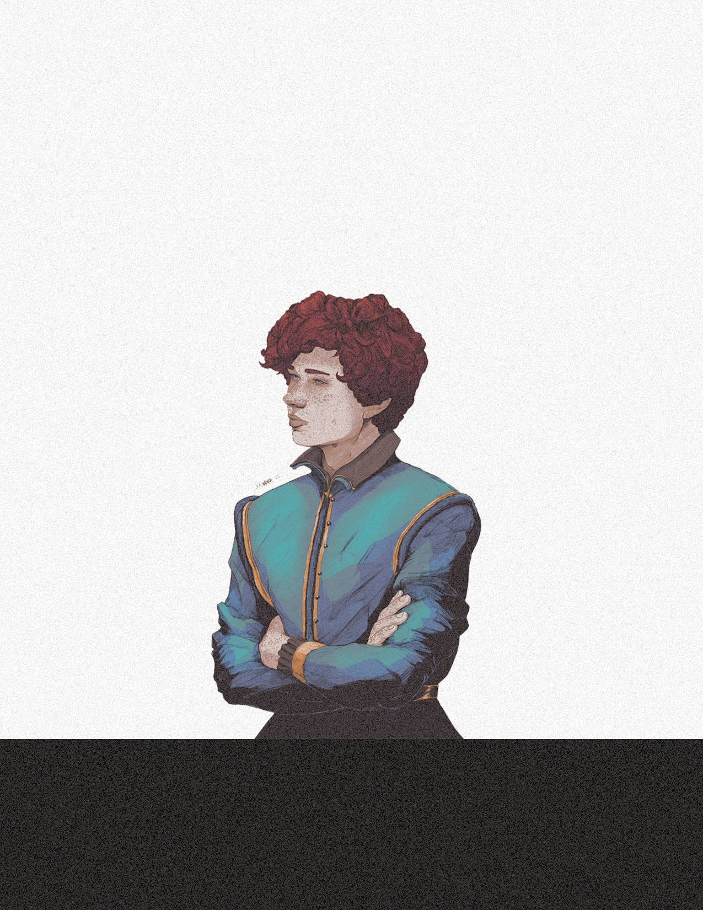
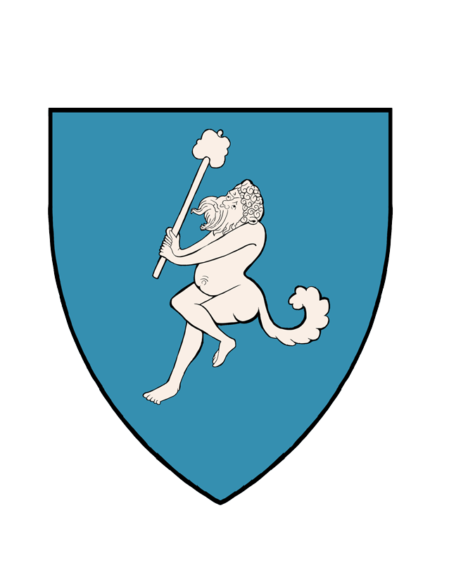
House Enetani traces its lineage to a time before the Old Kingdoms and before the Empire, they now take to the chaos in the realm to carve out the lands owed to their lineage.
The oldest and most historied family in Oaren, the Enetani give their namesake to The Kingdom of the Enetani. The last kingdom to emerge from the corpse of the shattered Abolgian dynasty, they began an alliance of noble houses and ancient families to form a bulwark against the Teperosi who have denounced the nobility of Oaren. The Enetani patriarch is Count Giorgio of Talas, but it is rumored he is decrepit and mute, so the rule of the Enetani falls upon the shoulders of the young and ambitious son of his, Lord Giovanni of House Enetani. With guidance from his uncle, Lord Sergio, the Enetani control most of the South-Eastern territories.
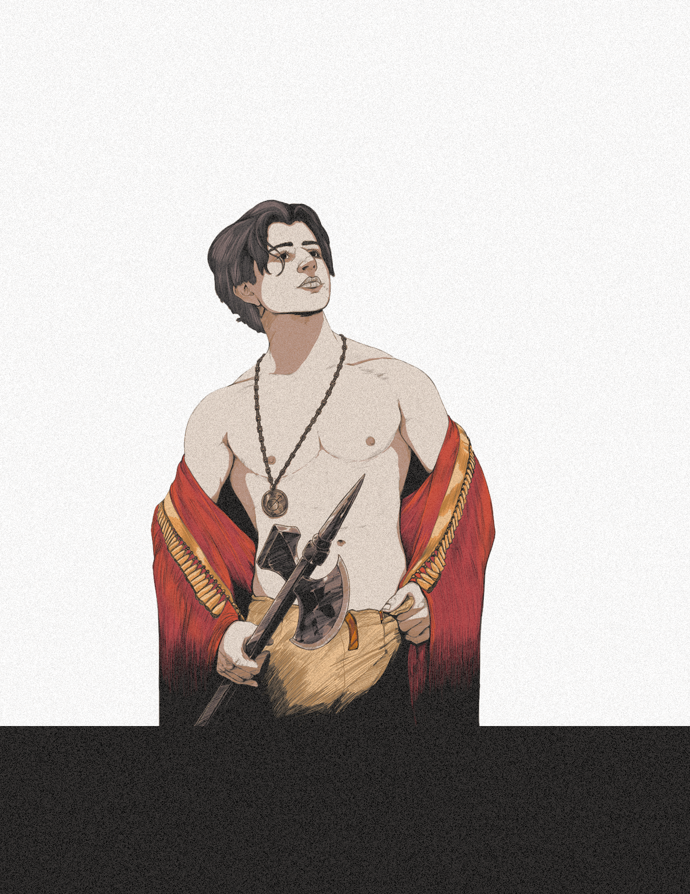
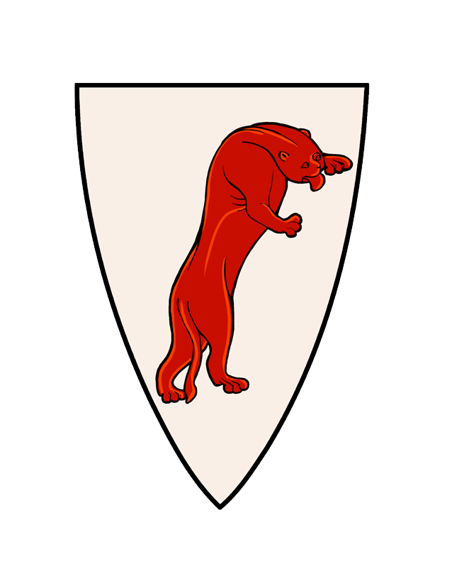
What started as a rebellion against a single provincial lord, the people of Oaren outsted all their nobility, hailing one of their number as a liberator, the Teperosi came into being.
With the massacre of the royal family, the realm of Oaren was thrown into chaos as thousand began to flee the Capital City of Vallia. But the violence and strife followed and soon even the most rural reaches of Oaren were forced to face the conflict. All knew and felt the loss of the Abolgian King, and soon every noble and aristocrat in Oaren began to clutch at the chance for the throne. New territories were carved out in blood. The common people of Oaren paid most dearly, often with their lives. In the far southern city of Cerdayla those common people of Oaren took a stand, and a rebellion began. Ten years of revolt and revolution gripped the southern and central regions of the realm of Oaren. When peace came it was only under the
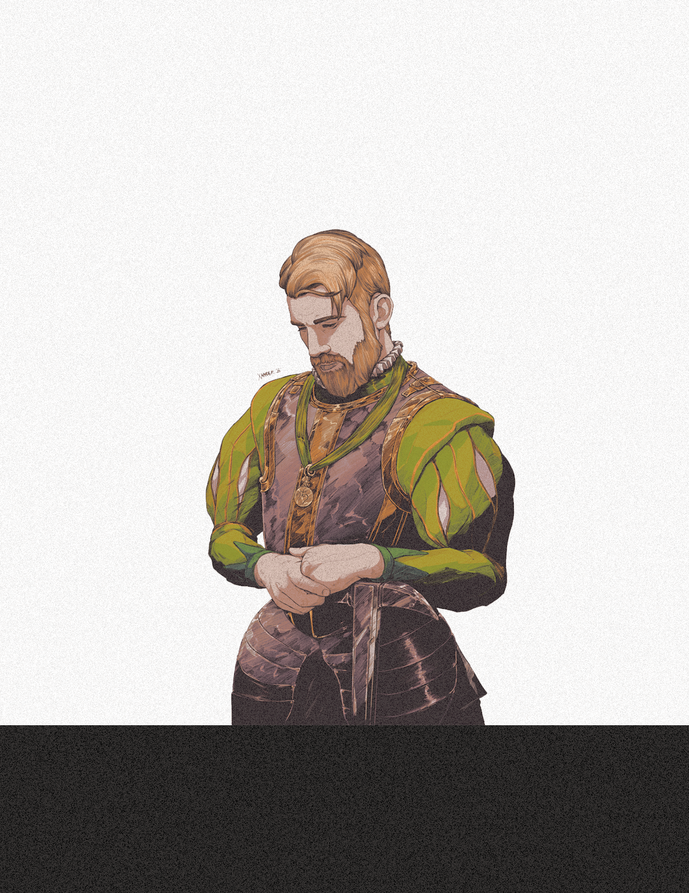
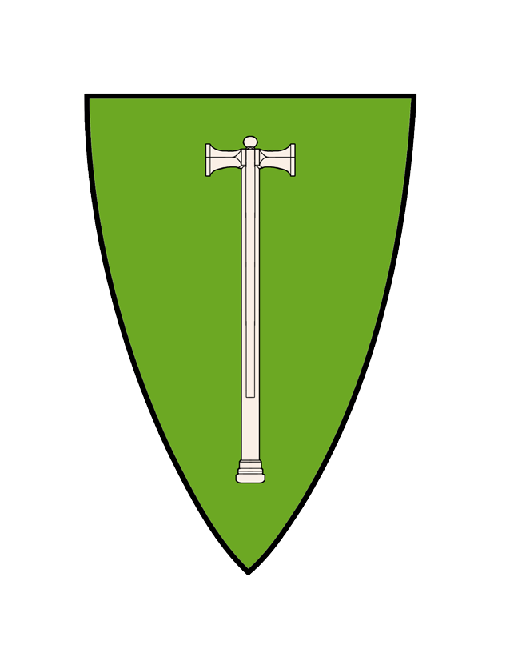
Merchant trademasters from Rheane, a realm across the sea. The Ylmara have purchased their way into the very soul of Oaren and now tighten their grip on coffers across the realm.
The Ylmara are led by Lord Amadeo of House Ylmara, a powerful merchant family from the Realm of Rheane. Amadeo served as a financier to the Abolgian throne under King Charles the Third, many suspect he had a direct hand in the death of the King. The Ylmara are well equipped,supplied, and powerful; but unliked by most everyone in Oaren, even those on their payroll.
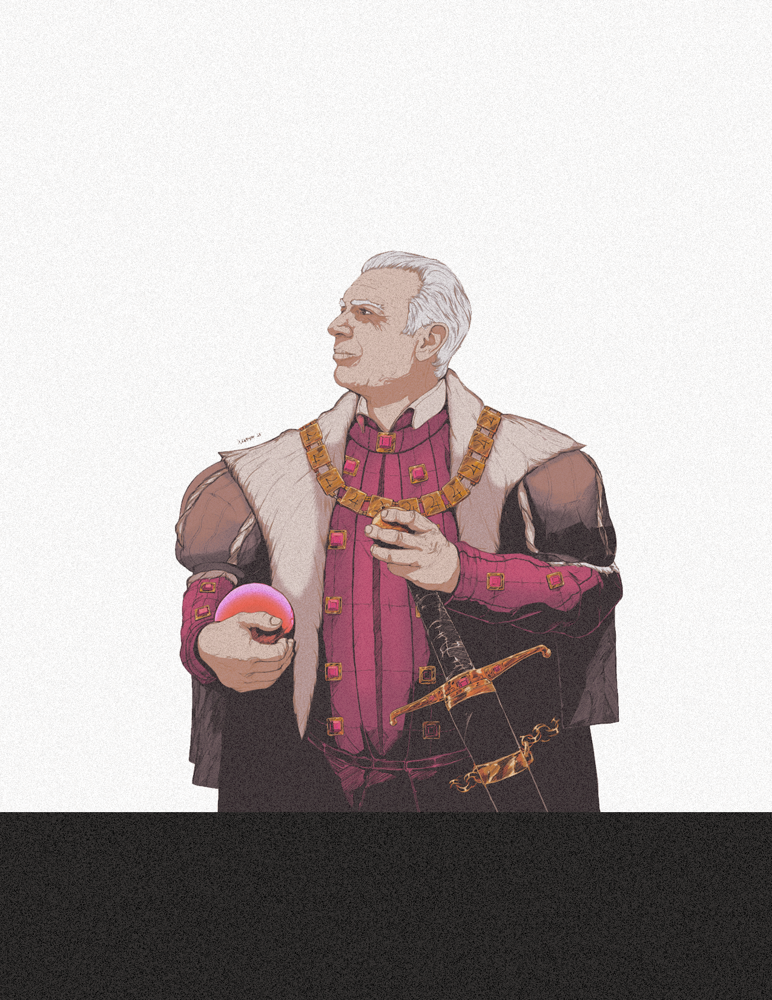
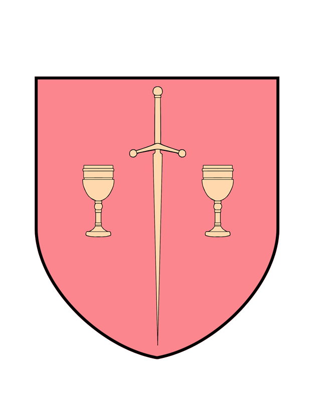
Comprehensive guide to all of the Fantasy subpages.
The ARTIST page or the ABOUT has the information pertaining to website Terms of Use, Privacy Policy, Copyright, and everything else to do with this website including information about upcoming projects and long-term goals.If you are looking to hire me as an artist for employment a large contract project please reivew this before contacting me.